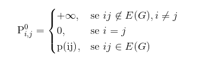
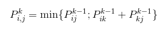
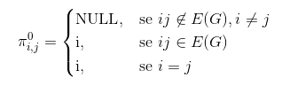

MAB 368, Algoritmos e Grafos - 2019/2
Algoritmo de Floyd
Descrição
O Algoritmo de Floyd tem como finalidade resolver um problema de caminho mínimo, em que deseja-se descobrir o menor caminho de um vértice u até v, para todo u,v ∈ V(G).
A Ideia do Algoritmo
O algotimo utiliza programação dinâmica.
Considere Pki, j como o tamanho do menor caminho do vértice i ao vértice j, permitindo somente os vértices em {1, 2, ..., k} como vértices intermediários no caminho.
Queremos: Pni, j ∀ i, j
Condições Iniciais:

Relação de Recorrência:

Algoritmo: Floyd
Entrada: Grafo G = (V, E) e p:E(G) → Q
Saída: matriz Pn quadrada de ordem n, onde Pni, j tem o valor do caminho mínimo de i a j
- Construir P0
- Para k ← 1 até n:
- Para i ← 1 até n:
- Para j ← 1 até n:
- Pkij ← min {Pk-1ij , Pk-1ik + Pk-1kj}
Para recuperar os caminhos mínimos
Considere πkij como o vértice imediatamente anterior a vj no caminho corrente de vi a vj.
No início:

Se Pk-1ij > Pk-1ik + Pk-1kj:
Pk-1ij ← Pk-1ik + Pk-1kj
πk-1ij ← πk-1ik
Complexidade
Complexidade de Espaço: O(n2). Apesar de gerarmos n tabelas de tamanho n², não é necessário guardar as matrizes anteriores a cada iteração.
Complexidade de Tempo: O(n3). O Tamanho da tabela é O(n3) e o cálculo de cada elemento é O(1).